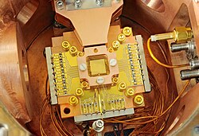

Bem-vindo ao Meu Site
Esta é uma estrutura simples e profissional.
Sobre a Computação Quântica
A computação quântica utiliza a mecânica quântica para processar dados de forma exponencialmente mais rápida que as máquinas atuais.
Em vez de usar bits comuns (0 ou 1), ela opera com qubits, que graças à superposição podem ser 0 e 1 simultaneamente, analisando múltiplos cenários de uma só vez.
Fenômenos como o emaranhamento conectam esses qubits para acelerar e sincronizar os cálculos.
O maior desafio para consolidar a tecnologia é a descoerência quântica, pois qualquer interferência ambiental faz a máquina errar, exigindo que os processadores
funcionem em refrigeradores complexos perto do zero absoluto. Essa inovação não mudará computadores domésticos, mas revolucionará a medicina com a simulação molecular de remédios
e a segurança digital ao forçar a criação de novas criptografias.
